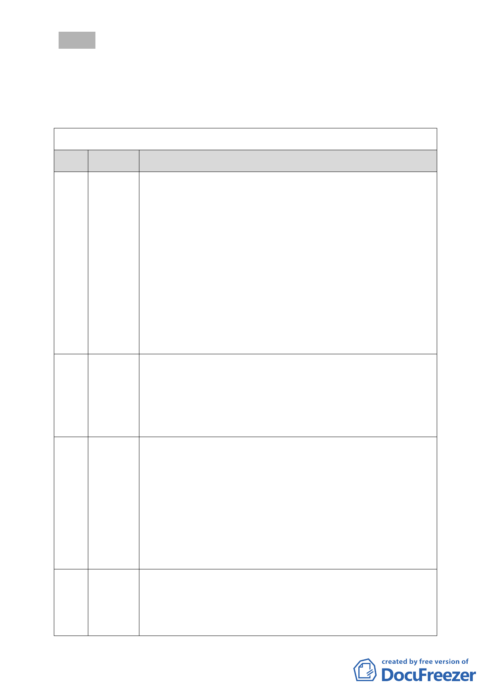

決議：本次會議民眾發言登記總數為 108 位，惟因會議時間有限，
今天共聽取 44 位民眾之發言，其餘留俟下次採召開續會的
方式繼續聽取民眾意見，所有發言意見並請幕僚單位摘要供
委員參考。
附註：陳情民眾發言摘要彙整表
次序
1
2
3
4
臺北市都市計畫委員會第 620 次委員會議公民或團體登記發言內容
姓名
蔡明勳
游秀敏
陳碧珍
王錫鋐
發言摘要
本人是居住大湖山莊街 20 幾年的居民，20 幾年來從大湖看對面慈
濟園區 2 棟鐵皮屋心裡感慨萬千，慈濟開發案會設置滯洪池、排水
明溝，防洪排水功能一定比現在及填土前溜地的狀況好很多，建蔽
率也從現在 42％縮減為 30％，除滯洪池及建築物以外地區亦將全面
綠化，甚至建築物屋頂也會做成空中花園，所以開發後之生態景觀
亦鮮少非政府單位可及。慈濟開發案亦包括社會福利、社區人文之
提升，也有越來越多國際友人到此參訪、學習資源回收，即此既能
兼顧防洪排水、生態景觀，又能促進內湖發展、提昇內湖國際知名
度的多功能開發案，難怪會獲 5 成以上的民眾支持。可惜的是慈濟
為佛教團體行事低調，故其亦為一弱勢團體，確實需公部門發揮智
慧與勇氣協助其完成此開發案。
本人為內溝里居民，去年失業曾獲師姐邀請去環保站做志工，在那
裡認識很多失業志工也獲證嚴法師話語所鼓勵，惟師兄師姐在簡陋
環境下一下雨就漏水，不管寒風日曬都要忍受，也還是在為地球盡
心力，懇請委員高抬貴手讓園區早日興建成更穩固更堅固，也能為
社區謀福利。
本人從曾祖父開始設籍於此已達 120 年以上，早期此地為一片黃
土、溜地、相思林，但從老國代、老立委到此蓋別墅以後，名為高
水準之住宅區，事實是高污染及人民鄉土的悖離。10 幾年以前曾視
慈濟這群人為愚蠢，惟我家孩子在小學 5、6 年級參加「我住的鄉鎮」
的介紹時所獲得優等獎，所介紹的單位就是慈濟；小孩曾告訴我說
內湖人眼光很短見，只知向「錢」看，讓我很慚愧。我們應該給內
湖人ㄧ個具人文素養、鄉土人情味與國際觀的社會，讓我們子孫能
永續經營的單位，懇請委員支持此開發案。
本人住東湖路快 20 年，早期亦為納莉颱風之受災戶，比較強調的是
開發前後的差別，此開發案不但縮小建蔽率又興建了三個滯洪池，
種種數據對紓解大湖公園的洪水是有助益，對居住於東湖下游的居
民而言此開發案是有保障且應予以支持的。此開發案亦有志工大樓
- 10 -